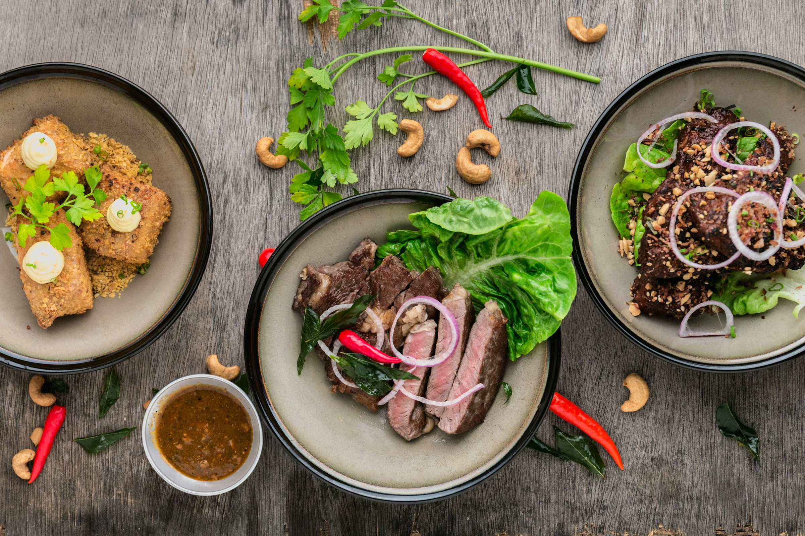
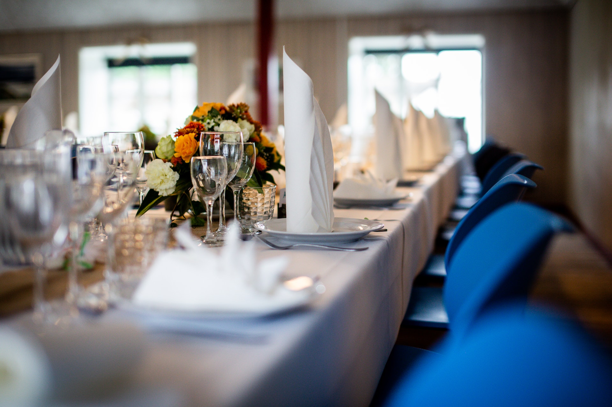
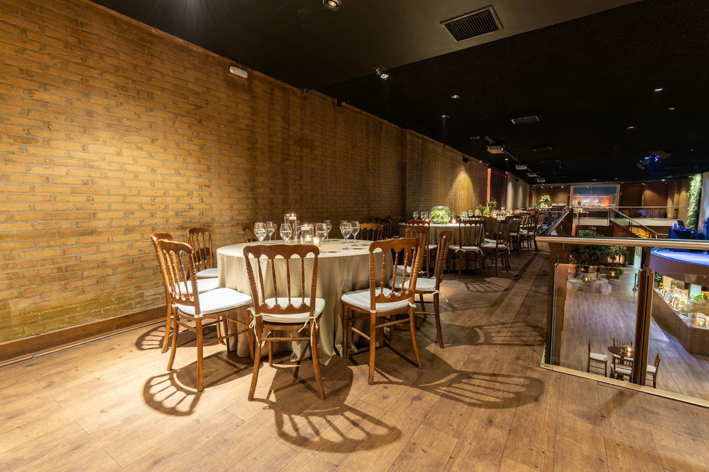

Sabores que Encantam os Sentidos
Encanto Gastronômico
No coração da alta gastronomia, oferecemos pratos cuidadosamente elaborados, onde sabores únicos se encontram com apresentações impecáveis.

Elegância e Conforto para Momentos Inesquecíveis
Ambiente Sofisticado
Um ambiente refinado e acolhedor, perfeito para experiências memoráveis que celebram a arte da culinária contemporânea.

Uma Experiência Culinária de Excelência